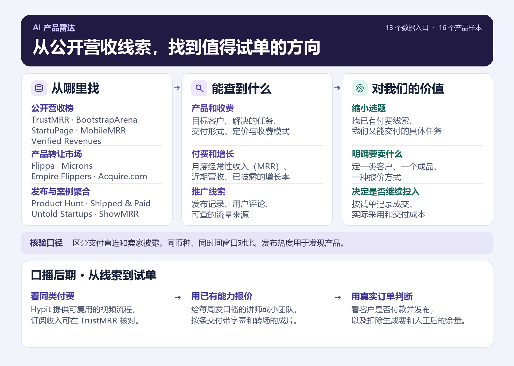

002 AI 出海变现 · 06 公开市场调研
发现和收集
付费 AI 产品
从公开营收榜、产品转让市场和发布目录发现付费 AI 产品，记录客户、交付、定价和可查的营收与增长。用这些线索挑一个我们能交付的任务，再用付费试单检验需求。
研究导图
去哪里找付费产品、能查到哪些证据，以及怎么用口播后期做一笔试单。

产品样本
打开案例可查看客户、收费方式、营收来源和可验证的切入点。
数据对照
对照相近的客户任务、相同的收入窗口，以及重复采集的增长值。
样本覆盖
计数仅针对本站样本。点来源名可以筛选对应项目。
数据入口
看清每个网站能发现什么项目，以及数据能验证到哪一步。
哪些方向值得验证
优先选择能交出一个成品、能报价、能核算成本的方向。
统计口径
数据来源
支付平台直连指金额或增长来自平台已连接的支付或订阅数据。挂牌披露指交易页公开的金额，单独标注审核方式。发布热度只作为发现线索。
时间与金额
以各条记录的来源日期或查阅日为准。MRR 衡量月度订阅收入，近 28 天、近 30 天和过去 12 个月的收入各自保留原口径。缺失值显示「未公开」。
样本与判断
样本从公开榜单和挂牌中定向抽取，偏向已公开收入的创作者工具。它能提供付费线索；做决策仍需要核对我们能触达的客户、实际交付成本和试单反馈。